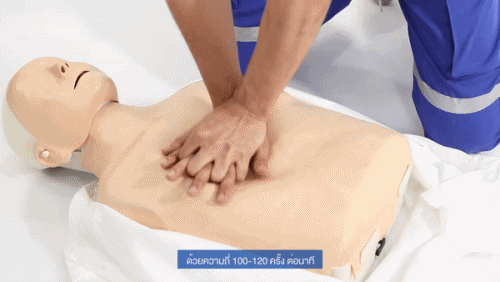
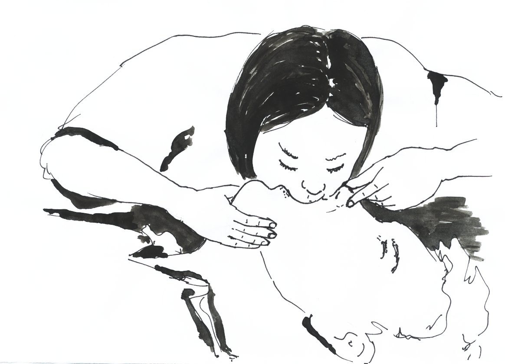

Person unconscious & NOT breathing?
-
1. Call Ambulance - click here for number
-
2. Perform CPR
-
A) Do 30x chest compressions
Push HARD about 100 times in a minute. This animation indicates the correct rhytm:Click to HEAR rhythm! Video by Bangkok Hospital Phuket, Edited by Mikael_Häggström, Creative Commons 3.0 Unported, Link
-
B) Do 2x emergency breaths
Tilt head backwards. Hold chin with one hand, pinch nose with the other. Apply mouth to mouth.
Image by Rama - Own work, CC BY-SA 2.0 fr, Link
-
C) Repeat Steps A. and B. until ambulance arrives!
-
{kind=link}
Person unconscious & IS breathing?
-
1. Call Ambulance - click here for number
-
2. Bring in safe distance, away from danger
Stretch both arms of the person over their head to pull them easily. -
3. Bring in recovery position
- A) Place persons nearest arm in right angle on ground
- B) Pick OTHER, farer away arm and place palm on opposite cheek
- C) Bend up farer away leg, so that foot touches floor
- D) Pull this knee towards you so that whole body crouches over
- E) Check that airways are free
Image by Rama - Own work, CC BY-SA 2.0 fr, Link
Click here for more details
{kind=link}
Person conscious / other injury
This website serves solely as an immediate aid for quickly instructing how to perform CPR in emergency situations. For other cases, please visit the dedicated NHS website
Disclaimer
The owner of this website does not take any responsibility for badly executed first aid as described on this website. To have reliable information sourced from experts, please consult your local emergency services provider or following pages: